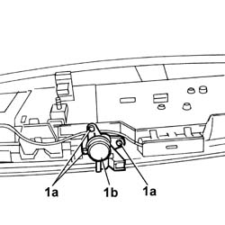

7025B46 BOOT LID LOCK BLOCK - R+R
- Path
- Procedures > 70 FITTINGS > 7025 COMPARTMENT LIDS > 7025B BOOT LID > 7025B46 BOOT LID LOCK BLOCK - R+R
- Kind
- repair procedure (removal / refitting; the operation number is the code)
- Applies to
- all engines; all production periods
- Interactive page
- https://sloeber94.github.io/elrnDB-lThss/en/#/80244
Applies to: all engines; all production periods
 Removing
Removing
 Refitting
RefittingOp. 7025B18 BOOT LID LINING - R+R
Op. 7055A54 NUMBERPLATE HOLDER - R+R
1. Undo the retaining bolts (1a) and remove the lock barrel (1b).

Applies to: all engines; all production periods
Refitting
RemovingFit the lock barrel in position and tighten the fixing bolts.